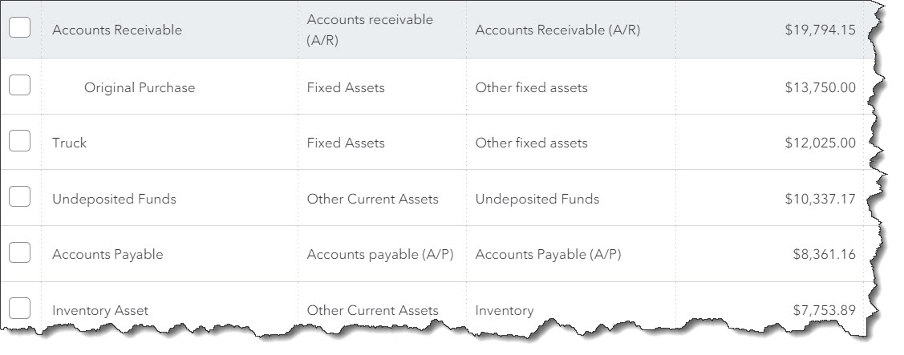

It works in the background as a critical element of QuickBooks Online. Understanding the role of the Chart of Accounts
There are still many millions of small businesses that won’t use accounting software. Expenses may be an issue for some of them, as well as hesitation to change the way they manage their money. The number one reason for this reticence, though, maybe the mistaken notion that you have to have a good understanding of the accounting process in order to use an online solution.
If you’ve already been using QuickBooks Online, you know this isn’t true. The site was designed for businesspeople, not accountants. It does all of the official bookkeeping in the background while you work with familiar language and processes. Still, there are a few elements that may be foreign to you.
The Chart of Accounts is one of these. You don’t have to do anything with it—in fact, we suggest that you don’t—but you’ll encounter it when you work with some transactions and records and reports.
Your Accounting Backbone
The Chart of Accounts is simply a list of financial categories that is used to track your company’s financial data. QuickBooks Online creates one for you that’s based on the business type and industry you chose when you were setting up your company data file. You can access it through an icon on your home page or by clicking the gear icon in the upper right of the page.
A section of QuickBooks Online’s Chart of Accounts
Some people call the Chart of Accounts the “backbone” of your accounting system. We think it’s more like the nervous system. When you feel a pain in your big toe, for example, you can identify the nerve that’s involved. And when an account is assigned to a record or transaction, you can trace it to a specific element of your overall financial picture. So when you create an invoice, for example, you know you can find it in your accounts receivable (A/R) register. Inventory items are actually assigned to multiple accounts by default.
QuickBooks Online knows where to route data that you’ve entered. Please don’t change these accounts without checking with us first.
What’s In the Chart of Accounts?
As you can see in the above image, your chart of accounts contains columns for Name, Account Type, and Detail Type. Accounts feed into one of two QuickBooks Online financial reports, either Balance Sheet or Profit & Loss. These are reports that the site can generate automatically, but we recommend you let us create and interpret them for you. They’re not as easy to understand as an accounts payable aging report, for example.
QuickBooks Online automatically determines which Account Type should be assigned to an account. Balance Sheet accounts have opening balances. They include:
You can view the registers for some individual accounts from the QuickBooks Online Chart of Accounts.
The remainder of the accounts in QuickBooks Online’s Chart of Accounts are used in the Profit & Loss report (or, Income Statement). They include:
What’s So Important About the Chart of Accounts?
It’s absolutely critical that the Chart of Accounts is comprehensive and correct. This means that you shouldn’t alter what QuickBooks Online has prepared for you on your own. If you feel that your Chart of Accounts needs changing, please contact us. The best thing to do is understand it, but leave it alone.
There are several reason why this lengthy list of accounts is so important, but it all boils down to registers and reports. You want your account registers to be accurate, containing only the correct entries. And your Chart of Accounts produces the reports that you’ll need when you:
Prepare income taxes. Your reportable income and deductible expenses will be incorrect if your account assignments are off.
Seek funding. Your numbers must be pristine if you’re planning to apply for a loan or take on investors or sell your company.
Monitor your finances. A flawed Chart of Accounts will not present a true representation of your income and expenses. This makes it difficult to analyze your company’s financial health and plan for a prosperous future.
To recap, remember these three things:
We provided this brief explanation of QuickBooks Online’s Chart of Accounts because we wanted you to have a basic understanding of this feature when you spot it during your daily work. If anything we’ve said isn’t clear, or if you have a question about your own accounting setup, please do let us know.